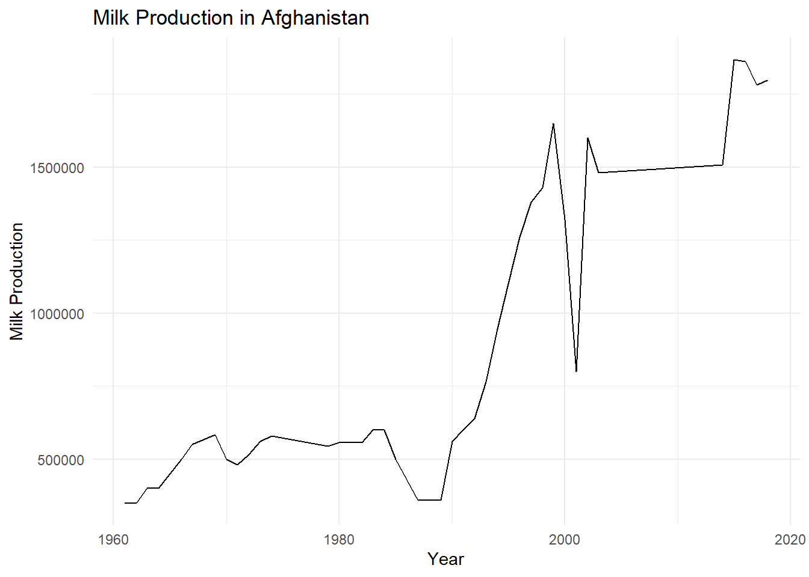

library(tidyverse)
library(ggplot2)
knitr::opts_chunk$set(echo = TRUE, warning=FALSE, message=FALSE)Challenge 8
challenge_8
Harsha Kanakeswar Gudipudi
faostat
Joining Data
Challenge Overview
Today’s challenge is to:
- read in multiple data sets, and describe the data set using both words and any supporting information (e.g., tables, etc)
- tidy data (as needed, including sanity checks)
- mutate variables as needed (including sanity checks)
- join two or more data sets and analyze some aspect of the joined data
(be sure to only include the category tags for the data you use!)
Read in data
Read in one (or more) of the following datasets, using the correct R package and command.
- military marriages ⭐⭐
- faostat ⭐⭐
- railroads ⭐⭐⭐
- fed_rate ⭐⭐⭐
- debt ⭐⭐⭐
- us_hh ⭐⭐⭐⭐
- snl ⭐⭐⭐⭐⭐
eggs_chicken_df <- read_csv("_data/FAOSTAT_egg_chicken.csv")
livestock_df <- read_csv("_data/FAOSTAT_livestock.csv")
dairy_df <- read_csv("_data/FAOSTAT_cattle_dairy.csv")Printing the first five rows of every dataset
head(eggs_chicken_df) # A tibble: 6 × 14
`Domain Code` Domain `Area Code` Area `Element Code` Element `Item Code`
<chr> <chr> <dbl> <chr> <dbl> <chr> <dbl>
1 QL Livestock … 2 Afgh… 5313 Laying 1062
2 QL Livestock … 2 Afgh… 5410 Yield 1062
3 QL Livestock … 2 Afgh… 5510 Produc… 1062
4 QL Livestock … 2 Afgh… 5313 Laying 1062
5 QL Livestock … 2 Afgh… 5410 Yield 1062
6 QL Livestock … 2 Afgh… 5510 Produc… 1062
# ℹ 7 more variables: Item <chr>, `Year Code` <dbl>, Year <dbl>, Unit <chr>,
# Value <dbl>, Flag <chr>, `Flag Description` <chr>head(livestock_df) # A tibble: 6 × 14
`Domain Code` Domain `Area Code` Area `Element Code` Element `Item Code`
<chr> <chr> <dbl> <chr> <dbl> <chr> <dbl>
1 QA Live Anima… 2 Afgh… 5111 Stocks 1107
2 QA Live Anima… 2 Afgh… 5111 Stocks 1107
3 QA Live Anima… 2 Afgh… 5111 Stocks 1107
4 QA Live Anima… 2 Afgh… 5111 Stocks 1107
5 QA Live Anima… 2 Afgh… 5111 Stocks 1107
6 QA Live Anima… 2 Afgh… 5111 Stocks 1107
# ℹ 7 more variables: Item <chr>, `Year Code` <dbl>, Year <dbl>, Unit <chr>,
# Value <dbl>, Flag <chr>, `Flag Description` <chr>head(dairy_df) # A tibble: 6 × 14
`Domain Code` Domain `Area Code` Area `Element Code` Element `Item Code`
<chr> <chr> <dbl> <chr> <dbl> <chr> <dbl>
1 QL Livestock … 2 Afgh… 5318 Milk A… 882
2 QL Livestock … 2 Afgh… 5420 Yield 882
3 QL Livestock … 2 Afgh… 5510 Produc… 882
4 QL Livestock … 2 Afgh… 5318 Milk A… 882
5 QL Livestock … 2 Afgh… 5420 Yield 882
6 QL Livestock … 2 Afgh… 5510 Produc… 882
# ℹ 7 more variables: Item <chr>, `Year Code` <dbl>, Year <dbl>, Unit <chr>,
# Value <dbl>, Flag <chr>, `Flag Description` <chr>Understanding the dimensions of data set 1
dim(eggs_chicken_df)[1] 38170 14Understanding the dimensions of data set 2
dim(livestock_df)[1] 82116 14Understanding the dimensions of data set 3
dim(dairy_df)[1] 36449 14Understanding the columns of data set 1
colnames(eggs_chicken_df) [1] "Domain Code" "Domain" "Area Code" "Area"
[5] "Element Code" "Element" "Item Code" "Item"
[9] "Year Code" "Year" "Unit" "Value"
[13] "Flag" "Flag Description"Understanding the columns of data set 2
colnames(livestock_df) [1] "Domain Code" "Domain" "Area Code" "Area"
[5] "Element Code" "Element" "Item Code" "Item"
[9] "Year Code" "Year" "Unit" "Value"
[13] "Flag" "Flag Description"Understanding the columns of data set 3
colnames(dairy_df) [1] "Domain Code" "Domain" "Area Code" "Area"
[5] "Element Code" "Element" "Item Code" "Item"
[9] "Year Code" "Year" "Unit" "Value"
[13] "Flag" "Flag Description"Briefly describe the data
I am using three data sets having information on eggs and chicken, livestock and dairy producing animals. The data sets contain information on livestock, live animals, eggs and chicken country wise. I would like to combine these three datasets to do an exploratory analysis country wise, item code wise etc.
Tidy Data (as needed)
Is your data already tidy, or is there work to be done? Be sure to anticipate your end result to provide a sanity check, and document your work here.
Checking to see how many entries in the 1st dataset has null values.
sum(is.na(eggs_chicken_df))[1] 7588Checking to see how many entries in the 1st dataset has null values.
sum(is.na(livestock_df))[1] 39571Checking to see how many entries in the 1st dataset has null values.
sum(is.na(dairy_df))[1] 10118The datasets are not very tidy but so I would like to clean them.
Cleaning the 3 data sets
eggs_chicken_df<- na.omit(eggs_chicken_df)
livestock_df<- na.omit(livestock_df)
dairy_df<- na.omit(dairy_df)Understanding the dimensions of the data sets post cleaning.
dim(eggs_chicken_df)[1] 30582 14dim(livestock_df)[1] 42545 14dim(dairy_df)[1] 26331 14##Join Data
dairy_livestock_df <-full_join(dairy_df,livestock_df)
dairy_livestock_df# A tibble: 68,876 × 14
`Domain Code` Domain `Area Code` Area `Element Code` Element `Item Code`
<chr> <chr> <dbl> <chr> <dbl> <chr> <dbl>
1 QL Livestock… 2 Afgh… 5318 Milk A… 882
2 QL Livestock… 2 Afgh… 5420 Yield 882
3 QL Livestock… 2 Afgh… 5510 Produc… 882
4 QL Livestock… 2 Afgh… 5318 Milk A… 882
5 QL Livestock… 2 Afgh… 5420 Yield 882
6 QL Livestock… 2 Afgh… 5510 Produc… 882
7 QL Livestock… 2 Afgh… 5318 Milk A… 882
8 QL Livestock… 2 Afgh… 5420 Yield 882
9 QL Livestock… 2 Afgh… 5510 Produc… 882
10 QL Livestock… 2 Afgh… 5318 Milk A… 882
# ℹ 68,866 more rows
# ℹ 7 more variables: Item <chr>, `Year Code` <dbl>, Year <dbl>, Unit <chr>,
# Value <dbl>, Flag <chr>, `Flag Description` <chr>Understanding the columns of Dairy-Livestock combined data frame.
colnames(dairy_livestock_df) [1] "Domain Code" "Domain" "Area Code" "Area"
[5] "Element Code" "Element" "Item Code" "Item"
[9] "Year Code" "Year" "Unit" "Value"
[13] "Flag" "Flag Description"dim(dairy_livestock_df)[1] 68876 14dairy_livestock_eggschicken_df <- full_join(dairy_livestock_df,eggs_chicken_df)
dairy_livestock_eggschicken_df# A tibble: 99,458 × 14
`Domain Code` Domain `Area Code` Area `Element Code` Element `Item Code`
<chr> <chr> <dbl> <chr> <dbl> <chr> <dbl>
1 QL Livestock… 2 Afgh… 5318 Milk A… 882
2 QL Livestock… 2 Afgh… 5420 Yield 882
3 QL Livestock… 2 Afgh… 5510 Produc… 882
4 QL Livestock… 2 Afgh… 5318 Milk A… 882
5 QL Livestock… 2 Afgh… 5420 Yield 882
6 QL Livestock… 2 Afgh… 5510 Produc… 882
7 QL Livestock… 2 Afgh… 5318 Milk A… 882
8 QL Livestock… 2 Afgh… 5420 Yield 882
9 QL Livestock… 2 Afgh… 5510 Produc… 882
10 QL Livestock… 2 Afgh… 5318 Milk A… 882
# ℹ 99,448 more rows
# ℹ 7 more variables: Item <chr>, `Year Code` <dbl>, Year <dbl>, Unit <chr>,
# Value <dbl>, Flag <chr>, `Flag Description` <chr>Understanding columns of overall combined data
colnames(dairy_livestock_eggschicken_df) [1] "Domain Code" "Domain" "Area Code" "Area"
[5] "Element Code" "Element" "Item Code" "Item"
[9] "Year Code" "Year" "Unit" "Value"
[13] "Flag" "Flag Description"Understanding dimensions of overall combined data
dim(dairy_livestock_eggschicken_df)[1] 99458 14summary(dairy_livestock_eggschicken_df) Domain Code Domain Area Code Area
Length:99458 Length:99458 Min. : 1 Length:99458
Class :character Class :character 1st Qu.: 81 Class :character
Mode :character Mode :character Median : 157 Mode :character
Mean :1254
3rd Qu.: 240
Max. :5504
Element Code Element Item Code Item
Min. :5111 Length:99458 Min. : 866 Length:99458
1st Qu.:5111 Class :character 1st Qu.: 882 Class :character
Median :5313 Mode :character Median :1034 Mode :character
Mean :5281 Mean :1002
3rd Qu.:5420 3rd Qu.:1062
Max. :5510 Max. :1126
Year Code Year Unit Value
Min. :1961 Min. :1961 Length:99458 Min. :0.000e+00
1st Qu.:1975 1st Qu.:1975 Class :character 1st Qu.:4.400e+03
Median :1991 Median :1991 Mode :character Median :3.514e+04
Mean :1990 Mean :1990 Mean :8.902e+06
3rd Qu.:2005 3rd Qu.:2005 3rd Qu.:2.685e+05
Max. :2018 Max. :2018 Max. :1.490e+09
Flag Flag Description
Length:99458 Length:99458
Class :character Class :character
Mode :character Mode :character
With the final combined data set which was created by joining 3 individual data sets, we can answer a lot of questions. As an example, I attempted to see how the total value of Milk Production in Afghanistan is changing over years.I observed an exponential increase in terms of value as illustrated in the graph below.
milk_production <- dairy_livestock_eggschicken_df %>%
filter(Element == "Production", Item == "Milk, whole fresh cow", Area == "Afghanistan" )
# Plotting the Milk Production over the years
ggplot(milk_production, aes(x = Year, y = Value)) +
geom_line() +
labs(x = "Year", y = "Milk Production") +
ggtitle("Milk Production in Afghanistan") +
theme_minimal()